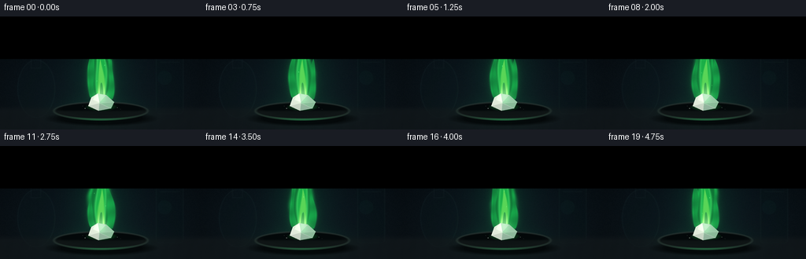
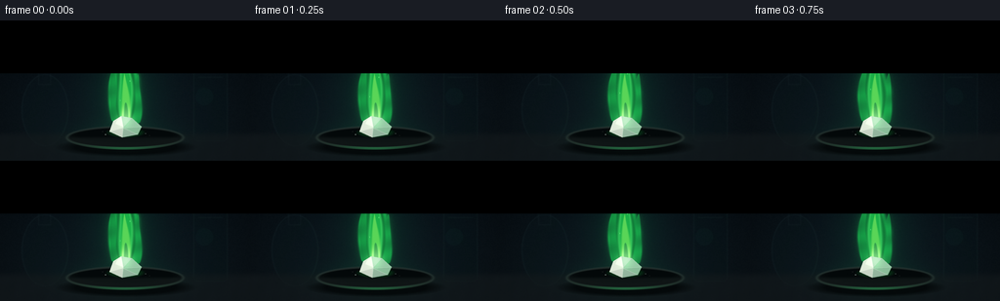
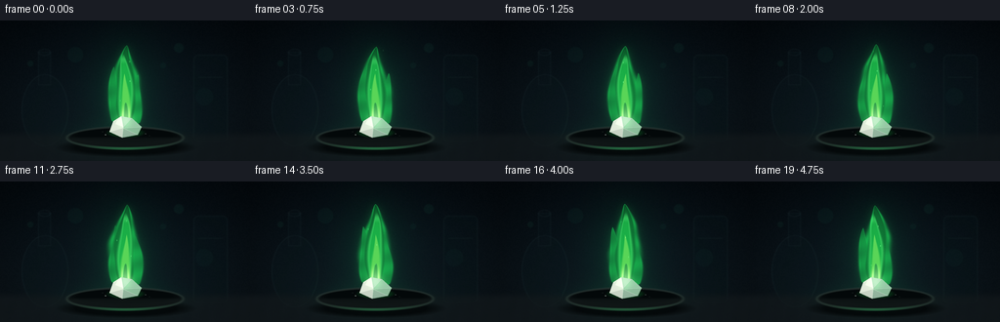

CODING AGENTS AS PIXEL WORLD MODELS
traex/GPT-5.6-Sol · material_0008
点击播放 · 原生 RGB 像素
逐轮保存的候选
回放视频、检查图与代码变化。
每份候选均可单独播放。实际图片检查记录在下方工具轨迹中。
候选 01播放与检查图
点击播放 · 原生 RGB 像素

展开代码变化
--- 上一保存版本
+++ 本次保存版本
@@ -0,0 +1,256 @@
+from pathlib import Path
+import json
+import numpy as np
+from PIL import Image, ImageDraw, ImageFilter
+import artifact_io
+
+CASE_DIR = Path(__file__).resolve().parent
+SPEC = json.loads((CASE_DIR / "task_spec.json").read_text())
+W, H = SPEC["width"], SPEC["height"]
+N = SPEC["frames"]
+SS = 4
+w, h = W * SS, H * SS
+Y, X = np.mgrid[0:h, 0:w].astype(np.float32)
+x = X / SS
+y = Y / SS
+rng = np.random.default_rng(19471)
+
+
+def smoothstep(a, b, v):
+ q = np.clip((v-a)/(b-a), 0, 1)
+ return q*q*(3-2*q)
+
+
+def over(img, color, alpha):
+ """Alpha composite a solid RGB color over a float image."""
+ a = np.clip(alpha, 0, 1)[..., None]
+ return img * (1-a) + np.asarray(color, np.float32) * a
+
+
+def blur_field(field, radius):
+ im = Image.fromarray(np.uint8(np.clip(field, 0, 1)*255), "L")
+ im = im.filter(ImageFilter.GaussianBlur(radius*SS))
+ return np.asarray(im, np.float32)/255.0
+
+
+def ellipse_mask(cx, cy, rx, ry, softness=1.0):
+ d = np.sqrt(((x-cx)/rx)**2 + ((y-cy)/ry)**2)
+ return np.clip((1.0-d)*min(rx,ry)/softness, 0, 1)
+
+
+def polygon_layer(points, fill, blur=0):
+ im = Image.new("L", (w,h), 0)
+ d = ImageDraw.Draw(im)
+ d.polygon([(int(px*SS),int(py*SS)) for px,py in points], fill=255)
+ if blur:
+ im = im.filter(ImageFilter.GaussianBlur(blur*SS))
+ return np.asarray(im, np.float32)/255.0, fill
+
+
+def flame_field(frame):
+ # s=0 at the fuel, s=1 at the tip. Low-frequency phase keeps motion smooth.
+ phase = 2*np.pi*frame/N
+ top = 24.5 + 1.8*np.sin(phase+0.45) + 0.6*np.sin(2*phase)
+ base = 110.5
+ s = np.clip((base-y)/(base-top), 0, 1)
+ center = (128.0
+ + (2.0*np.sin(phase+2.2*s) + 1.0*np.sin(2*phase-5.0*s))*s
+ + 3.1*np.sin(phase*0.75 + 6.0*s)*s**1.65)
+ width = (5.4 + 17.0*np.sin(np.pi*s)**0.78) * (1-s)**0.36
+ width *= 1.0 + 0.045*np.sin(2*phase+11*s) + 0.035*np.sin(3*phase-17*s)
+ vertical = smoothstep(top-1.4, top+2.3, y) * smoothstep(base+1.8, base-2.0, y)
+ q = np.abs(x-center)/(width+0.01)
+ primary = np.exp(-2.0*q**2) * vertical
+ shape = smoothstep(0.10, 0.66, primary)
+
+ # Two smaller, fused tongues give the flame an organic fork without looking unstable.
+ def tongue(cx0, tip, by, radius, sway, ph):
+ st = np.clip((by-y)/(by-tip),0,1)
+ c = cx0 + sway*np.sin(phase+ph+4.5*st)*st
+ ww = (3.0 + radius*np.sin(np.pi*st)**0.72)*(1-st)**0.42
+ vv = smoothstep(tip-1,tip+2,y)*smoothstep(by+1,by-2,y)
+ return smoothstep(.12,.63,np.exp(-2.25*(np.abs(x-c)/(ww+.1))**2)*vv)
+ left = tongue(117.5, 46+1.3*np.sin(phase+1.8), 104, 8.0, 2.3, 1.3)
+ right = tongue(140.0, 55+1.5*np.sin(phase+3.1), 106, 7.0, 2.0, 2.5)
+ outer = np.maximum(shape, np.maximum(left*.82, right*.73))
+
+ # Detailed internal flowing structures; all phases are coherent frame-to-frame.
+ inner_center = 128 + 1.6*np.sin(phase+5*s)*s + 1.1*np.sin(2*phase-9*s)*s
+ inner_width = (3.0 + 10.4*np.sin(np.pi*s)**.9)*(1-s)**.5
+ iq = np.abs(x-inner_center)/(inner_width+.1)
+ inner_raw = np.exp(-2.25*iq**2)*vertical*smoothstep(.01,.18,1-s)
+ inner = smoothstep(.12,.67,inner_raw) * smoothstep(top+7,top+20,y)
+
+ core_s = np.clip((109-y)/55,0,1)
+ core_center = 128.5 + 1.2*np.sin(phase+5*core_s)*core_s
+ core_width = (4.1 + 6.5*np.sin(np.pi*core_s)**.8)*(1-core_s)**.62
+ core_raw = np.exp(-2.25*(np.abs(x-core_center)/(core_width+.1))**2)
+ core_vert = smoothstep(51,58,y)*smoothstep(111,107,y)
+ core = smoothstep(.15,.72,core_raw*core_vert)
+
+ # A narrow dark-green hollow at the fuel is characteristic of a real flame cone.
+ hollow_s = np.clip((109-y)/25,0,1)
+ hollow_c = 128.5 + .5*np.sin(phase+3*hollow_s)
+ hollow_w = 4.8*(1-hollow_s)**.42 + .5
+ hollow = smoothstep(.2,.75,np.exp(-2.4*(np.abs(x-hollow_c)/hollow_w)**2)
+ *smoothstep(82,86,y)*smoothstep(110,106,y))
+ return outer, inner, core, hollow, s, center, width
+
+# Stable backdrop: a dark laboratory with restrained glassware silhouettes.
+base = np.zeros((h,w,3),np.float32)
+vertical = y/H
+base[...,0] = 5 + 9*vertical
+base[...,1] = 11 + 12*vertical
+base[...,2] = 16 + 13*vertical
+# Cool central pool of ambient light.
+ambient = np.exp(-(((x-129)/112)**2 + ((y-73)/93)**2)*1.3)
+base += ambient[...,None]*np.array([2,6,7],np.float32)
+# Fine, fixed sensor-like texture.
+noise_small = rng.normal(0, 1, (H,W)).astype(np.float32)
+noise_big = np.asarray(Image.fromarray(np.uint8(np.clip(noise_small*25+128,0,255))).resize((w,h),Image.Resampling.BICUBIC),np.float32)-128
+base += noise_big[...,None]*0.018
+# Vignette.
+vig = np.clip(((x-W/2)/(W*.72))**2 + ((y-H/2)/(H*.78))**2,0,1)
+base *= (1-.42*vig[...,None])
+
+# Background glass vessels, defocused and almost silhouetted.
+bg = Image.fromarray(np.uint8(np.clip(base,0,255)),"RGB")
+bgd = ImageDraw.Draw(bg,"RGBA")
+def S(v): return int(v*SS)
+# shadowy flask at left
+bgd.ellipse((S(22),S(55),S(70),S(129)), fill=(10,24,28,72), outline=(55,82,84,28), width=S(1))
+bgd.rectangle((S(39),S(32),S(52),S(66)), fill=(8,19,24,90), outline=(48,72,77,26), width=S(1))
+bgd.ellipse((S(39),S(29),S(52),S(36)), outline=(60,83,87,30), width=S(1))
+# tall beaker right
+bgd.rounded_rectangle((S(198),S(35),S(233),S(124)),radius=S(5),fill=(7,20,24,65),outline=(56,91,87,25),width=S(1))
+bgd.line((S(203),S(58),S(228),S(58)),fill=(54,101,86,22),width=S(1))
+# dim bokeh behind flame
+for cx,cy,r,a in [(77,35,8,12),(183,28,5,17),(209,78,9,8),(31,44,3,17),(167,46,3,12)]:
+ bgd.ellipse((S(cx-r),S(cy-r),S(cx+r),S(cy+r)),fill=(35,150,108,a))
+bg = bg.filter(ImageFilter.GaussianBlur(S(0.65)))
+base = np.asarray(bg,np.float32)
+
+frames=[]
+for f in range(N):
+ img = base.copy()
+ phase = 2*np.pi*f/N
+ outer, inner, core, hollow, fs, fc, fw = flame_field(f)
+
+ # Emerald illumination spreads over the bench and glassware.
+ broad_glow = np.exp(-(((x-(128+1.5*np.sin(phase)))/39)**2 + ((y-77)/60)**2)*1.35)
+ bench_glow = np.exp(-(((x-128)/62)**2 + ((y-119)/19)**2)*1.5)
+ img += broad_glow[...,None]*np.array([1.5,20,8.5])
+ img += bench_glow[...,None]*np.array([1.8,16,7.5])
+
+ # Table plane with a soft horizon and green reflected light.
+ table = smoothstep(112,121,y)
+ img = over(img,(18,24,27),table*.70)
+ img += (table*bench_glow)[...,None]*np.array([2,12,5],np.float32)
+ # subtle tabletop grain
+ grain = .55*np.sin(x*.38 + np.sin(y*.1)) + .35*np.sin(x*.12+y*.27)
+ img += (table*grain*.45)[...,None]
+
+ # Ceramic dish: broad cast shadow, body, lip, and reflected green arc.
+ shadow = ellipse_mask(129,130,73,10,3)
+ img = over(img,(0,2,3),shadow*.72)
+ dish_body = ellipse_mask(128,120.3,62,12.4,1.3)
+ img = over(img,(8,13,14),dish_body*.98)
+ dish_inner = ellipse_mask(128,117.7,56.3,8.2,1.2)
+ img = over(img,(3,8,9),dish_inner*.92)
+ front_lip = ellipse_mask(128,121.1,61.0,10.5,1.0)*smoothstep(118,122,y)
+ img = over(img,(18,25,25),front_lip*.72)
+ # specular edge and green reflection
+ rim = np.clip(ellipse_mask(128,120.2,62.2,12.5,.55)-ellipse_mask(128,120.0,59.7,10.1,.55),0,1)
+ img = over(img,(62,77,72),rim*.40)
+ refl_arc = rim*np.exp(-((x-128)/34)**2)*smoothstep(112,119,y)
+ img = over(img,(38,190,93),refl_arc*(.33+.05*np.sin(phase)))
+
+ # Layered flame aura first. It illuminates and remains translucent.
+ aura = blur_field(outer,5.2)
+ near_aura = blur_field(outer,1.8)
+ img += aura[...,None]*np.array([4,43,13],np.float32)
+ img += near_aura[...,None]*np.array([3,23,6],np.float32)
+
+ # Outer transparent envelope: saturated emerald, brighter at its edge.
+ img = over(img,(10,176,61),outer*.26)
+ # Boundary/rim derived from mask minus an eroded-looking power term.
+ edge = np.clip(outer-outer**2.5,0,1)*1.9
+ flowing = .80 + .20*np.sin(y*.29 + phase*2.1 + x*.075)
+ img = over(img,(31,255,104),edge*flowing*.72)
+ # Main inner green body.
+ img = over(img,(40,239,91),inner*.46)
+ inner_edge = np.clip(inner-inner**3,0,1)*1.55
+ img = over(img,(87,255,125),inner_edge*.62)
+
+ # Bright yellow-chartreuse core with an almost white base.
+ img = over(img,(163,255,105),core*.46)
+ core_hot = core**2.2 * smoothstep(83,102,y)
+ img = over(img,(226,255,170),core_hot*.72)
+ white_base = np.exp(-(((x-128.5)/8.5)**2+((y-104.5)/8.0)**2)*1.4)
+ white_base *= outer
+ img = over(img,(235,255,205),white_base*.67)
+ # Hollow inner cone overlays with cool transparent teal.
+ img = over(img,(8,101,59),hollow*.48)
+ hollow_edge = np.clip(hollow-hollow**3,0,1)*1.2
+ img = over(img,(72,255,142),hollow_edge*.34)
+
+ # Tiny rising incandescent green flecks (few, not distracting), periodic paths.
+ for k in range(4):
+ age = (f/N + k*.263) % 1.0
+ py = 102 - age*76
+ px = 128 + (k-1.5)*3 + 4*np.sin(age*8+k*2.1)
+ pa = np.sin(np.pi*age)**1.2 * (0.6 if k else .35)
+ pm = ellipse_mask(px,py,.55+.25*age,.9+.35*age,.4)
+ img = over(img,(120,255,145),pm*pa)
+
+ # Fuel crystal, kept crisp in front of the flame: one irregular translucent piece.
+ # A green underglow grounds it on the dish.
+ under = ellipse_mask(128.5,115,21,5.6,1.8)
+ img += under[...,None]*np.array([4,38,12],np.float32)
+ crystal_pts = [(112,114),(116,103),(124,98),(135,100),(145,109),(141,117),(125,120)]
+ cryst,_ = polygon_layer(crystal_pts,255)
+ img = over(img,(198,211,195),cryst*.93)
+ # Crystal facets.
+ facets = [
+ ([(116,103),(124,98),(126,110),(112,114)],(231,240,224),.86),
+ ([(124,98),(135,100),(126,110)],(178,205,187),.82),
+ ([(135,100),(145,109),(126,110)],(155,192,168),.82),
+ ([(112,114),(126,110),(125,120)],(205,216,201),.78),
+ ([(126,110),(145,109),(141,117),(125,120)],(136,174,150),.78),
+ ([(120,102),(124,99),(126,109),(118,106)],(251,255,243),.65),
+ ]
+ for pts,col,a in facets:
+ m,_=polygon_layer(pts,255)
+ img=over(img,col,m*a)
+ # green transmitted light on upper/right facets
+ trans,_=polygon_layer([(126,110),(135,100),(145,109),(141,117)],255)
+ img=over(img,(103,226,137),trans*(.17+.025*np.sin(phase)))
+ # crystalline white ridges
+ ridge = Image.new("L",(w,h),0); rd=ImageDraw.Draw(ridge)
+ for seg in [[(124,98),(126,110),(141,117)],[(112,114),(126,110),(145,109)],[(126,110),(125,120)]]:
+ rd.line([(S(a),S(b)) for a,b in seg],fill=190,width=max(1,S(.55)))
+ rm=np.asarray(ridge,np.float32)/255
+ img=over(img,(240,255,239),rm*.57)
+ # a few boric acid granules beside the piece
+ for gx,gy,gr in [(108,117,.9),(149,116,.65),(105,114,.45),(153,118,.4)]:
+ gm=ellipse_mask(gx,gy,gr,gr*.62,.25)
+ img=over(img,(190,211,197),gm*.78)
+
+ # Gentle bloom from the completed hot regions.
+ bloom_src=np.clip(core_hot*.8+white_base*.7+edge*.18,0,1)
+ bloom=blur_field(bloom_src,2.7)
+ img += bloom[...,None]*np.array([19,43,19],np.float32)
+
+ # Fine film grain changes subtly per frame, preserving temporal coherence.
+ frng=np.random.default_rng(8000+f)
+ nsmall=frng.normal(0,.52,(H,W)).astype(np.float32)
+ nfull=np.asarray(Image.fromarray(np.uint8(np.clip(nsmall*35+128,0,255))).resize((w,h),Image.Resampling.BILINEAR),np.float32)-128
+ img += nfull[...,None]*.018
+
+ # Downsample antialiased high-resolution render.
+ out=Image.fromarray(np.uint8(np.clip(img,0,255)),"RGB").resize((W,H),Image.Resampling.LANCZOS)
+ frames.append(np.asarray(out,dtype=np.uint8))
+
+frames=np.stack(frames)
+artifact_io.save(frames, CASE_DIR)
+print(f"saved {len(frames)} frames: {frames.shape}, {frames.dtype}")
候选 02播放与检查图
点击播放 · 原生 RGB 像素


展开代码变化
--- 上一保存版本
+++ 本次保存版本
@@ -83,7 +83,7 @@
core_s = np.clip((109-y)/55,0,1)
core_center = 128.5 + 1.2*np.sin(phase+5*core_s)*core_s
- core_width = (4.1 + 6.5*np.sin(np.pi*core_s)**.8)*(1-core_s)**.62
+ core_width = (4.1 + 6.5*np.clip(np.sin(np.pi*core_s), 0, None)**.8)*(1-core_s)**.62
core_raw = np.exp(-2.25*(np.abs(x-core_center)/(core_width+.1))**2)
core_vert = smoothstep(51,58,y)*smoothstep(111,107,y)
core = smoothstep(.15,.72,core_raw*core_vert)
@@ -185,10 +185,10 @@
# Bright yellow-chartreuse core with an almost white base.
img = over(img,(163,255,105),core*.46)
core_hot = core**2.2 * smoothstep(83,102,y)
- img = over(img,(226,255,170),core_hot*.72)
+ img = over(img,(226,255,170),core_hot*.78)
white_base = np.exp(-(((x-128.5)/8.5)**2+((y-104.5)/8.0)**2)*1.4)
white_base *= outer
- img = over(img,(235,255,205),white_base*.67)
+ img = over(img,(235,255,205),white_base*.76)
# Hollow inner cone overlays with cool transparent teal.
img = over(img,(8,101,59),hollow*.48)
hollow_edge = np.clip(hollow-hollow**3,0,1)*1.2
候选 03播放与检查图

可观测工具轨迹
实际执行的命令与返回图片。
命令 1exit 0
/bin/bash -lc "cat prompt.txt && printf '\\n--- GENERATION_RULES.md ---\\n' && cat GENERATION_RULES.md"
命令 2exit 0
/bin/bash -lc "cat task_spec.json && printf '\\n--- files ---\\n' && find . -maxdepth 2 -type f -printf '%p\\n' | sort"
命令 3exit 0
/bin/bash -lc "sed -n '1,240p' artifact_io.py"
命令 4exit 2
/bin/bash -lc "cat > generate.py <<'PY'
from pathlib import Path
import json
import numpy as np
from PIL import Image, ImageDraw, ImageFilter
import artifact_io
CASE_DIR = Path(__file__).resolve().parent
SPEC = json.loads((CASE_DIR / \"task_spec.json\").read_text())
W, H = SPEC[\"width\"], SPEC[\"height\"]
N = SPEC[\"frames\"]
SS = 4
w, h = W * SS, H * SS
Y, X = np.mgrid[0:h, 0:w].astype(np.float32)
x = X / SS
y = Y / SS
rng = np.random.default_rng(19471)
def smoothstep(a, b, v):
q = np.clip((v-a)/(b-a), 0, 1)
return q*q*(3-2*q)
def over(img, color, alpha):
\"\"\"Alpha composite a solid RGB color over a float image.\"\"\"
a = np.clip(alpha, 0, 1)[..., None]
return img * (1-a) + np.asarray(color, np.float32) * a
def blur_field(field, radius):
im = Image.fromarray(np.uint8(np.clip(field, 0, 1)*255), \"L\")
im = im.filter(ImageFilter.GaussianBlur(radius*SS))
return np.asarray(im, np.float32)/255.0
def ellipse_mask(cx, cy, rx, ry, softness=1.0):
d = np.sqrt(((x-cx)/rx)**2 + ((y-cy)/ry)**2)
return np.clip((1.0-d)*min(rx,ry)/softness, 0, 1)
def polygon_layer(points, fill, blur=0):
im = Image.new(\"L\", (w,h), 0)
d = ImageDraw.Draw(im)
d.polygon([(int(px*SS),int(py*SS)) for px,py in points], fill=255)
if blur:
im = im.filter(ImageFilter.GaussianBlur(blur*SS))
return np.asarray(im, np.float32)/255.0, fill
def flame_field(frame):
# s=0 at the fuel, s=1 at the tip. Low-frequency phase keeps motion smooth.
phase = 2*np.pi*frame/N
top = 24.5 + 1.8*np.sin(phase+0.45) + 0.6*np.sin(2*phase)
base = 110.5
s = np.clip((base-y)/(base-top), 0, 1)
center = (128.0
+ (2.0*np.sin(phase+2.2*s) + 1.0*np.sin(2*phase-5.0*s))*s
+ 3.1*np.sin(phase*0.75 + 6.0*s)*s**1.65)
width = (5.4 + 17.0*np.sin(np.pi*s)**0.78) * (1-s)**0.36
width *= 1.0 + 0.045*np.sin(2*phase+11*s) + 0.035*np.sin(3*phase-17*s)
vertical = smoothstep(top-1.4, top+2.3, y) * smoothstep(base+1.8, base-2.0, y)
q = np.abs(x-center)/(width+0.01)
primary = np.exp(-2.0*q**2) * vertical
shape = smoothstep(0.10, 0.66, primary)
# Two smaller, fused tongues give the flame an organic fork without looking unstable.
def tongue(cx0, tip, by, radius, sway, ph):
st = np.clip((by-y)/(by-tip),0,1)
c = cx0 + sway*np.sin(phase+ph+4.5*st)*st
ww = (3.0 + radius*np.sin(np.pi*st)**0.72)*(1-st)**0.42
vv = smoothstep(tip-1,tip+2,y)*smoothstep(by+1,by-2,y)
return smoothstep(.12,.63,np.exp(-2.25*(np.abs(x-c)/(ww+.1))**2)*vv)
left = tongue(117.5, 46+1.3*np.sin(phase+1.8), 104, 8.0, 2.3, 1.3)
right = tongue(140.0, 55+1.5*np.sin(phase+3.1), 106, 7.0, 2.0, 2.5)
outer = np.maximum(shape, np.maximum(left*.82, right*.73))
# Detailed internal flowing structures; all phases are coherent frame-to-frame.
inner_center = 128 + 1.6*np.sin(phase+5*s)*s + 1.1*np.sin(2*phase-9*s)*s
inner_width = (3.0 + 10.4*np.sin(np.pi*s)**.9)*(1-s)**.5
iq = np.abs(x-inner_center)/(inner_width+.1)
inner_raw = np.exp(-2.25*iq**2)*vertical*smoothstep(.01,.18,1-s)
inner = smoothstep(.12,.67,inner_raw) * smoothstep(top+7,top+20,y)
core_s = np.clip((109-y)/55,0,1)
core_center = 128.5 + 1.2*np.sin(phase+5*core_s)*core_s
core_width = (4.1 + 6.5*np.sin(np.pi*core_s)**.8)*(1-core_s)**.62
core_raw = np.exp(-2.25*(np.abs(x-core_center)/(core_width+.1))**2)
core_vert = smoothstep(51,58,y)*smoothstep(111,107,y)
core = smoothstep(.15,.72,core_raw*core_vert)
# A narrow dark-green hollow at the fuel is characteristic of a real flame cone.
hollow_s = np.clip((109-y)/25,0,1)
hollow_c = 128.5 + .5*np.sin(phase+3*hollow_s)
hollow_w = 4.8*(1-hollow_s)**.42 + .5
hollow = smoothstep(.2,.75,np.exp(-2.4*(np.abs(x-hollow_c)/hollow_w)**2)
*smoothstep(82,86,y)*smoothstep(110,106,y))
return outer, inner, core, hollow, s, center, width
# Stable backdrop: a dark laboratory with restrained glassware silhouettes.
base = np.zeros((h,w,3),np.float32)
vertical = y/H
base[...,0] = 5 + 9*vertical
base[...,1] = 11 + 12*vertical
base[...,2] = 16 + 13*vertical
# Cool central pool of ambient light.
ambient = np.exp(-(((x-129)/112)**2 + ((y-73)/93)**2)*1.3)
base += ambient[...,None]*np.array([2,6,7],np.float32)
# Fine, fixed sensor-like texture.
noise_small = rng.normal(0, 1, (H,W)).astype(np.float32)
noise_big = np.asarray(Image.fromarray(np.uint8(np.clip(noise_small*25+128,0,255))).resize((w,h),Image.Resampling.BICUBIC),np.float32)-128
base += noise_big[...,None]*0.018
# Vignette.
vig = np.clip(((x-W/2)/(W*.72))**2 + ((y-H/2)/(H*.78))**2,0,1)
base *= (1-.42*vig[...,None])
# Background glass vessels, defocused and almost silhouetted.
bg = Image.fromarray(np.uint8(np.clip(base,0,255)),\"RGB\")
bgd = ImageDraw.Draw(bg,\"RGBA\")ndef S(v): return int(v*SS)
# shadowy flask at left
bgd.ellipse((S(22),S(55),S(70),S(129)), fill=(10,24,28,72), outline=(55,82,84,28), width=S(1))
bgd.rectangle((S(39),S(32),S(52),S(66)), fill=(8,19,24,90), outline=(48,72,77,26), width=S(1))
bgd.ellipse((S(39),S(29),S(52),S(36)), outline=(60,83,87,30), width=S(1))
# tall beaker right
bgd.rounded_rectangle((S(198),S(35),S(233),S(124)),radius=S(5),fill=(7,20,24,65),outline=(56,91,87,25),width=S(1))
bgd.line((S(203),S(58),S(228),S(58)),fill=(54,101,86,22),width=S(1))
# dim bokeh behind flame
for cx,cy,r,a in [(77,35,8,12),(183,28,5,17),(209,78,9,8),(31,44,3,17),(167,46,3,12)]:
bgd.ellipse((S(cx-r),S(cy-r),S(cx+r),S(cy+r)),fill=(35,150,108,a))
bg = bg.filter(ImageFilter.GaussianBlur(S(0.65)))
base = np.asarray(bg,np.float32)
frames=[]
for f in range(N):
img = base.copy()
phase = 2*np.pi*f/N
outer, inner, core, hollow, fs, fc, fw = flame_field(f)
# Emerald illumination spreads over the bench and glassware.
broad_glow = np.exp(-(((x-(128+1.5*np.sin(phase)))/39)**2 + ((y-77)/60)**2)*1.35)
bench_glow = np.exp(-(((x-128)/62)**2 + ((y-119)/19)**2)*1.5)
img += broad_glow[...,None]*np.array([1.5,20,8.5])
img += bench_glow[...,None]*np.array([1.8,16,7.5])
# Table plane with a soft horizon and green reflected light.
table = smoothstep(112,121,y)
img = over(img,(18,24,27),table*.70)
img += (table*bench_glow)[...,None]*np.array([2,12,5],np.float32)
# subtle tabletop grain
grain = .55*np.sin(x*.38 + np.sin(y*.1)) + .35*np.sin(x*.12+y*.27)
img += (table*grain*.45)[...,None]
# Ceramic dish: broad cast shadow, body, lip, and reflected green arc.
shadow = ellipse_mask(129,130,73,10,3)
img = over(img,(0,2,3),shadow*.72)
dish_body = ellipse_mask(128,120.3,62,12.4,1.3)
img = over(img,(8,13,14),dish_body*.98)
dish_inner = ellipse_mask(128,117.7,56.3,8.2,1.2)
img = over(img,(3,8,9),dish_inner*.92)
front_lip = ellipse_mask(128,121.1,61.0,10.5,1.0)*smoothstep(118,122,y)
img = over(img,(18,25,25),front_lip*.72)
# specular edge and green reflection
rim = np.clip(ellipse_mask(128,120.2,62.2,12.5,.55)-ellipse_mask(128,120.0,59.7,10.1,.55),0,1)
img = over(img,(62,77,72),rim*.40)
refl_arc = rim*np.exp(-((x-128)/34)**2)*smoothstep(112,119,y)
img = over(img,(38,190,93),refl_arc*(.33+.05*np.sin(phase)))
# Layered flame aura first. It illuminates and remains translucent.
aura = blur_field(outer,5.2)
near_aura = blur_field(outer,1.8)
img += aura[...,None]*np.array([4,43,13],np.float32)
img += near_aura[...,None]*np.array([3,23,6],np.float32)
# Outer transparent envelope: saturated emerald, brighter at its edge.
img = over(img,(10,176,61),outer*.26)
# Boundary/rim derived from mask minus an eroded-looking power term.
edge = np.clip(outer-outer**2.5,0,1)*1.9
flowing = .80 + .20*np.sin(y*.29 + phase*2.1 + x*.075)
img = over(img,(31,255,104),edge*flowing*.72)
# Main inner green body.
img = over(img,(40,239,91),inner*.46)
inner_edge = np.clip(inner-inner**3,0,1)*1.55
img = over(img,(87,255,125),inner_edge*.62)
# Bright yellow-chartreuse core with an almost white base.
img = over(img,(163,255,105),core*.46)
core_hot = core**2.2 * smoothstep(83,102,y)
img = over(img,(226,255,170),core_hot*.72)
white_base = np.exp(-(((x-128.5)/8.5)**2+((y-104.5)/8.0)**2)*1.4)
white_base *= outer
img = over(img,(235,255,205),white_base*.67)
# Hollow inner cone overlays with cool transparent teal.
img = over(img,(8,101,59),hollow*.48)
hollow_edge = np.clip(hollow-hollow**3,0,1)*1.2
img = over(img,(72,255,142),hollow_edge*.34)
# Tiny rising incandescent green flecks (few, not distracting), periodic paths.
for k in range(4):
age = (f/N + k*.263) % 1.0
py = 102 - age*76
px = 128 + (k-1.5)*3 + 4*np.sin(age*8+k*2.1)
pa = np.sin(np.pi*age)**1.2 * (0.6 if k else .35)
pm = ellipse_mask(px,py,.55+.25*age,.9+.35*age,.4)
img = over(img,(120,255,145),pm*pa)
# Fuel crystal, kept crisp in front of the flame: one irregular translucent piece.
# A green underglow grounds it on the dish.
under = ellipse_mask(128.5,115,21,5.6,1.8)
img += under[...,None]*np.array([4,38,12],np.float32)
crystal_pts = [(112,114),(116,103),(124,98),(135,100),(145,109),(141,117),(125,120)]
cryst,_ = polygon_layer(crystal_pts,255)
img = over(img,(198,211,195),cryst*.93)
# Crystal facets.
facets = [
([(116,103),(124,98),(126,110),(112,114)],(231,240,224),.86),
([(124,98),(135,100),(126,110)],(178,205,187),.82),
([(135,100),(145,109),(126,110)],(155,192,168),.82),
([(112,114),(126,110),(125,120)],(205,216,201),.78),
([(126,110),(145,109),(141,117),(125,120)],(136,174,150),.78),
([(120,102),(124,99),(126,109),(118,106)],(251,255,243),.65),
]
for pts,col,a in facets:
m,_=polygon_layer(pts,255)
img=over(img,col,m*a)
# green transmitted light on upper/right facets
trans,_=polygon_layer([(126,110),(135,100),(145,109),(141,117)],255)
img=over(img,(103,226,137),trans*(.17+.025*np.sin(phase)))
# crystalline white ridges
ridge = Image.new(\"L\",(w,h),0); rd=ImageDraw.Draw(ridge)
for seg in [[(124,98),(126,110),(141,117)],[(112,114),(126,110),(145,109)],[(126,110),(125,120)]]:
rd.line([(S(a),S(b)) for a,b in seg],fill=190,width=max(1,S(.55)))
rm=np.asarray(ridge,np.float32)/255
img=over(img,(240,255,239),rm*.57)
# a few boric acid granules beside the piece
for gx,gy,gr in [(108,117,.9),(149,116,.65),(105,114,.45),(153,118,.4)]:
gm=ellipse_mask(gx,gy,gr,gr*.62,.25)
img=over(img,(190,211,197),gm*.78)
# Gentle bloom from the completed hot regions.
bloom_src=np.clip(core_hot*.8+white_base*.7+edge*.18,0,1)
bloom=blur_field(bloom_src,2.7)
img += bloom[...,None]*np.array([19,43,19],np.float32)
# Fine film grain changes subtly per frame, preserving temporal coherence.
frng=np.random.default_rng(8000+f)
nsmall=frng.normal(0,.52,(H,W)).astype(np.float32)
nfull=np.asarray(Image.fromarray(np.uint8(np.clip(nsmall*35+128,0,255))).resize((w,h),Image.Resampling.BILINEAR),np.float32)-128
img += nfull[...,None]*.018
# Downsample antialiased high-resolution render.
out=Image.fromarray(np.uint8(np.clip(img,0,255)),\"RGB\").resize((W,H),Image.Resampling.LANCZOS)
frames.append(np.asarray(out,dtype=np.uint8))
frames=np.stack(frames)
artifact_io.save(frames, CASE_DIR)
print(f\"saved {len(frames)} frames: {frames.shape}, {frames.dtype}\")
PY
python generate.py
ls -lh pixels.npz inspection.png transition_check.png index.html frames/00.png"命令 5exit 0
/bin/bash -lc 'python generate.py && ls -lh pixels.npz inspection.png transition_check.png index.html frames/00.png'
命令 6exit 0
/bin/bash -lc "python generate.py && python - <<'PY'
from pathlib import Path
import json, numpy as np
from PIL import Image
p=Path('.')
s=json.loads((p/'task_spec.json').read_text())
z=np.load(p/'pixels.npz')['pixels']
ims=sorted((p/'frames').glob('*.png'))
a=np.stack([np.asarray(Image.open(x)) for x in ims])
print('frames',a.shape,a.dtype,'range',a.min(),a.max())
print('packed',z.shape,z.dtype,'expected',(s['height'],s['width'],s['frames']))
print('mean frame deltas',np.abs(np.diff(a.astype(np.int16),axis=0)).mean(axis=(1,2,3)).round(3).tolist())
assert a.shape==(20,144,256,3) and a.dtype==np.uint8
assert z.shape==(144,256,20)
assert len(ims)==20 and (p/'index.html').stat().st_size>0
PY"视觉工具实际返回图片 1

视觉工具实际返回图片 2

保存候选 3 份；完成命令 6 次；可验证图片返回 2 张。原始 API 响应与完整日志保留在本地。